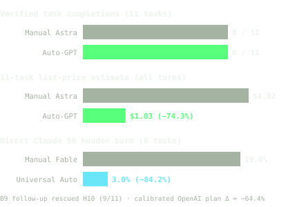

FL-TR-2026-04 · FINAL RESEARCH REPORT 004 · VERSION 1.0
Routing the Bill
Eight weeks of LLM proxy cache economics, four failed single-shot pilots, and paired multi-turn agent trials across real operator work.
Between 10 September and 5 November 2026, frack-router mediated 131,228 requests and 20.6B logical prompt tokens across OpenAI, Anthropic, xAI, Google, and local vLLM backends. In the 102,087 detailed per-request captures (16.2B prompt tokens), 95.14% of prompt tokens were prefix-cache reads—making cache preservation far more consequential than per-turn classifier cleverness. When we tried to prove Auto-routing savings on cheap single-shot patch prompts, four consecutive pilots failed or lost money (Haiku-first cost 36.8% more than fixed Sonnet; single-shot non-reasoning Grok solved 0 of 2 tasks). Rebuilding the evaluation around complete multi-turn tool-and-test loops from a 12-task operator shortlist told the real story—and exposed both six production proxy bugs and the exact failure mode where refusing to escalate hurts task completion.

- Historical traffic
- 131,228 requests · 20.6B logical prompt tokens overall; 95.14% cache reads across 102,087 detailed captures containing 16.2B prompt tokens ($8.6k list estimate with cache discounts vs $59.9k uncached counterfactual).
- Negative pilots kept
- 4 single-shot campaigns retained in full: HTTP 402 halt, Haiku-first +36.8% cost regression, native string-error crash, and 0/2 Grok single-shot patches.
- OpenAI 11-task loop
auto-gptmatched manualgpt-6-astraat 8/11 verified completions (2/3 vs 2/3 on untouched held-out tasks) in 830s vs 1,226s (−32.3% time).- Cross-checked savings
- −74.3% vs pinned $10/M frontier (95% bootstrap CI [68.4%, 79.7%]); −64.4% calibrated OpenAI weekly quota; −58.6% vs 8-week manual mix ($6.23/M); −35.6% vs recent manual mix ($3.89/M).
- Direct Claude headers
- Across 6 completed cross-provider tasks, Universal
autoburned 3.0% of the 5-hour session window vs 19.0% on manual Fable (−84.2%), offloading read loops to localqwen3.8-27b. - Shipped policy update
- Both suites failed the same safety-redesign task (
H10) when pinned to a warm workhorse across 3 failing test runs. Shippedauto-2026-11-15.1(Policy B9: escalate at 3 consecutive verified failures + mixed-summary pytest fix).
Final publication, 28 November 2026. This closes the 15 November draft without new experiments or peer review. Equal 8/11 totals are not quality parity: the arms failed different tasks, only three tasks were held out, and there were no repeated trials establishing equivalent reliability. No ablation establishes the independent benefit of B9 escalation; the fresh H10 pass used only the workhorse, and later H10 trials still failed. Historical deployment statements are not a fresh production verification.
One operator's workload across one lab's repositories. Automated graders verify functional, security, and factual constraints; subjective prose/UX preference packets remain blind-reviewed separately. Clean container workspaces (2k–41k prompt tokens) under-test 150k+ long-context attention decay.
Citation
Infected Research / FrackLabs. 2026. Routing the Bill: Cache-First Model Routing Across Real Agent Loops. Research Report 004, FL-TR-2026-04. Version 1.0, finalized 28 November 2026; originally published 15 November 2026.